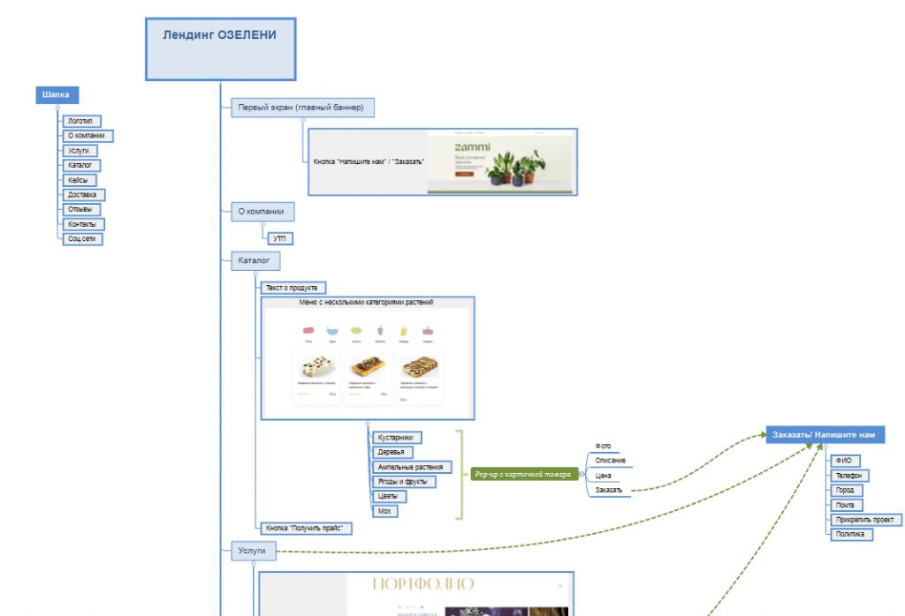
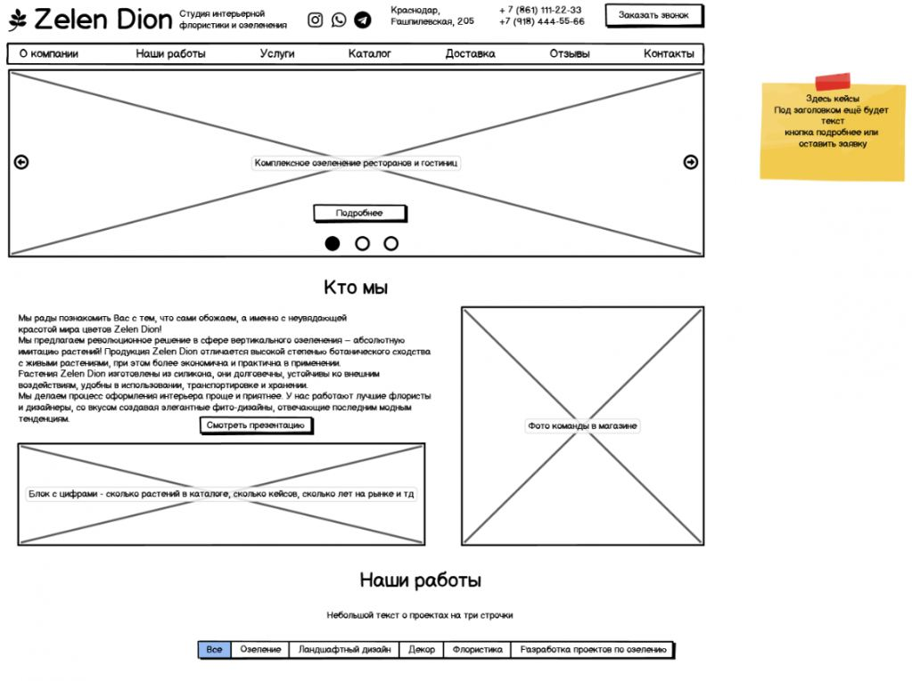
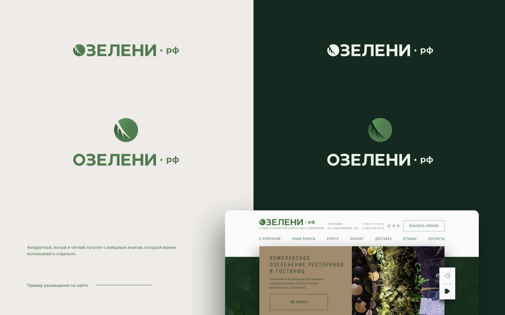
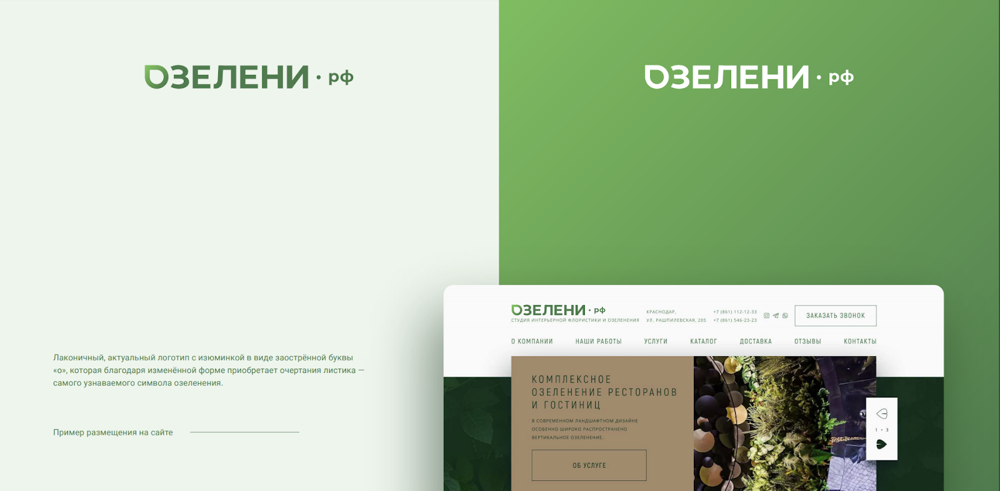
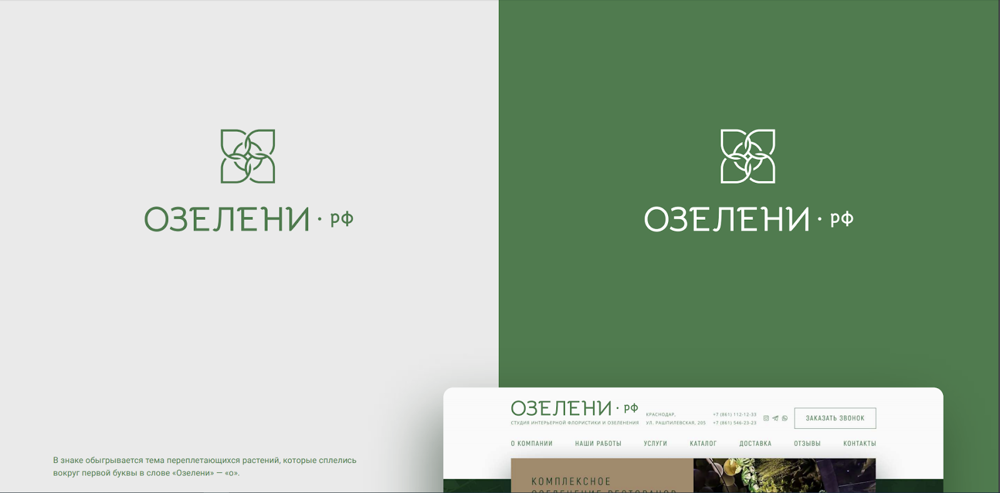
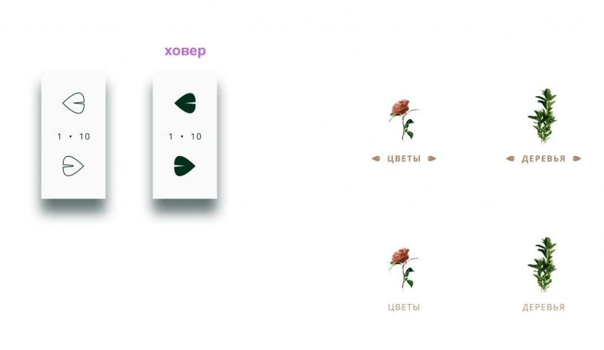
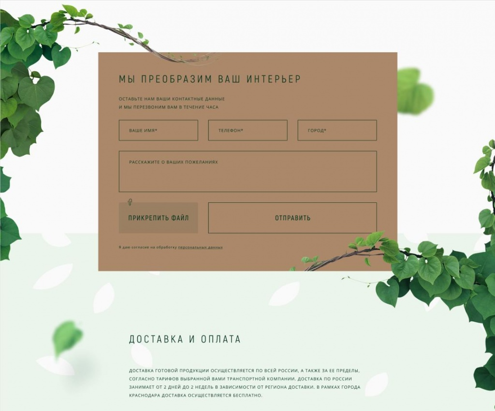
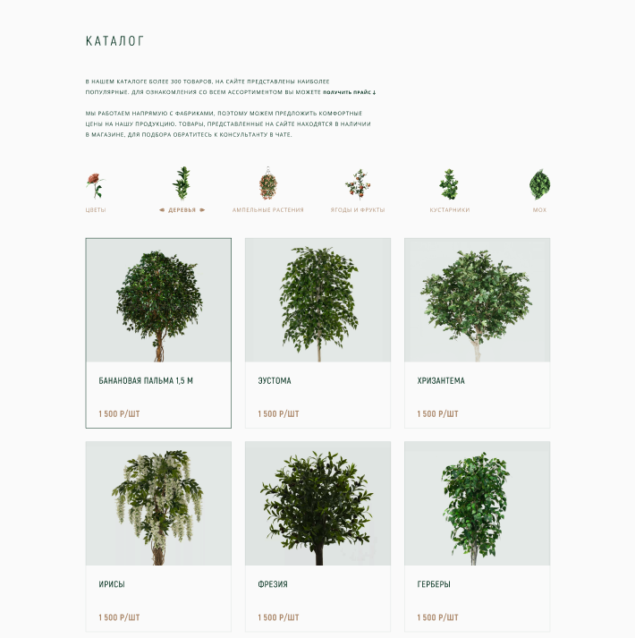
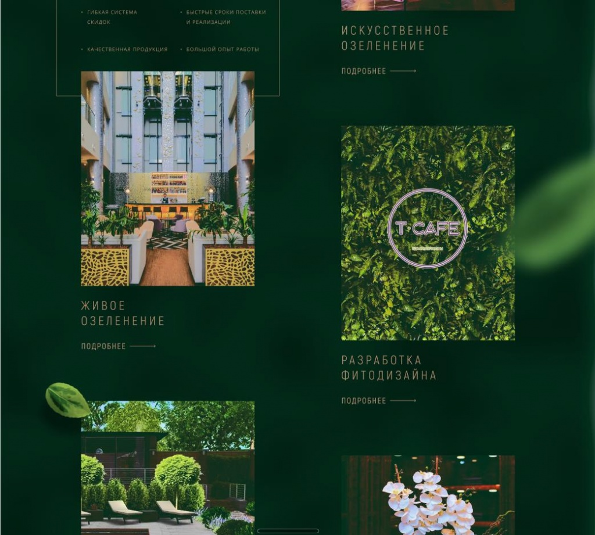

История рождения каждой компании уникальна и волнительна, в первую очередь для её основателя. Трудно передать чувство человека, который отправляется в неизвестность, и всё, что у него есть, это опыт, желание сделать любимое дело основным источником дохода и совсем немного (бывают исключения) денег и клиентов.
NUTS Digital создавался именно так. Наверное, поэтому нам очень нравится помогать компаниям с похожей историей в самом начале пути.
02
Клиент
«Озелени» — студия озеленения всех видов и форматов: искусственное и живое озеленение, разработка фитодизайна, реализация ландшафтного дизайна, декор, интерьерная флористика.
Это не исчерпывающий список, компания на месте не стоит, и первой осваивает новые направления флористики и натурального дизайна, продаёт растения и элементы декора, подбирает и поставляет их под конкретные проекты, оказывает услуги по уходу за растениями.
Студия уже 5 лет на рынке озеленения, реализовала более 223 проектов в 25 городах, наладила отличные отношения с поставщиками из Китая, питомниками из Нидерландов и Краснодарского края, чтобы предложить не только приятную цену и быстрые сроки доставки, но и отличное качество товаров и услуг.
03
Предыстория
Анастасия, основатель «Озелени», начинала свой путь с работы по франшизе под чужим брендом, но со своей командой, материалами, опытом и подходом.
За несколько лет Настя озеленила: отель MARRIOTT, бургер-бар и кафе в парке «Краснодар», сеть бутиков «EXCELSIOR», event-агентство и ещё вагон и маленькую тележку помещений и прилегающих территорий.
Наконец, настал тот день, когда Анастасия решилась открыть свою студию.
04
Цель
Упаковать новую студию озеленения: придумать название, базовый фирменный стиль, разработать лендинг. Уместить всё это в очень узкий бюджет.
Если честно, хотелось от участия в этом проекте отказаться, так как рентабельность при полном цикле производства была примерно равна средней температуре в декабре в Якутске, только в процентах.
С другой стороны, тематика и клиент очень понравились, заказчик доверял нам целиком и полностью, и мы решили попробовать с помощью некоторых изменений процесса разработки вывести проект «в плюс» без ущерба для качества.
05
Задачи
придумать название для студии озеленения.
разработать базовый фирменный стиль (логотип, шрифт, фирменные цвета).
разработать одностраничный сайт для презентации компании, её услуг, каталога, портфолио.
не превысить установленный на проект бюджет.
06
Аналитика
Чтобы быстро, но хорошо сделать структуру блоков сайта, нужно как следует погрузиться в контекст бизнеса клиента, после чего повысить уровень «насмотренности» на дизайн, сайты, стратегию и упаковку других компаний в исследуемой отрасли.
Мы подробно побеседовали с основателем компании, посмотрели фото и видео реализованных проектов, поискали и внимательно изучили хорошие сайты в тематике озеленения, флористики и ландшафтного дизайна.
В результате имеем: подробную структура лендинга со скриншотами и ссылками на примерное устройство и внешний вид блока; менеджера проекта, способного отличить хорошего озеленителя от плохого, и аргументировать свой выбор. Едем дальше!

07
Проектирование
К проектированию этого сайта дизайнера мы не привлекали по нескольким причинам:
стилизовать прототип не было ни возможности, ни смысла, т.к. не было ни названия, ни логотипа, ни фирменных цветов;
разработкой управлял опытный менеджер, который тоже умеет в проектирование интерфейсов;
привлечение дизайнера на этой стадии привело бы к выходу из обозначенного бюджета.
Прототип сделали в Balsamiq, показали заказчику, передали на дизайн.

08
Нейминг и фирменный стиль
Клиент изначально пришёл к нам с желанием назвать студию «Зелёный мир»«. Разумеется, мы были против такого популярного и банального названия, и обещали придумать лучше. Устроили удалённый мозговой штурм в Discord (все сидели дома из-за пандемии), и почти моментально выдали первый годный вариант: Zelen Dion.
Всем понравилось, и некоторое время это было рабочее название проекта (даже на прототипе сохранилось). Но спустя некоторое время клиент осознал, «Зелин Дион» — это слишком смело, и слишком сложно, поймут не все.
После нескольких дней фонового креатива чей-то мозг выдал «Озелени». Название удачное: призывает к действию «озеленить это», при перестановке ударения удачно делится на «О зелени» и сохраняет общий смысл.
К названию предложили 3 варианта логотипа и фирменных цветов. Клиент выбрал самый тёмный вариант, с встраиванием графического знака в название студии (он сверху).



09
Дизайн
Концепция вдохновлена в первую очередь просмотром фотографий и видео реализованных «Озелени» проектов. Рекомендуем зайти на сайт и полистать портфолио — такую красоту словами не передать.
В основе визуальной концепции три оттенка зелёного. Дополнительными цветами использованы золотой и белый.
Мы добавили растения везде, где только нашли место (на финальной стадии пришлось некоторые убирать с макета), а для усиления эффекта придумали небольшие детали: переключатели слайдеров и выделение активного раздела в каталоге выполнены в форме листов.



Есть и весьма интересная проблема, которую мы осознали по ходу создания дизайна. Природа несимметрична, а веб-страницы в основе своей имеют абсолютно прагматичную и ровную сетку. Чтобы симметрию «поломать» в тех местах, где это уместно, мы использовали не только графику, но и намеренный сдвиг элементов, которые изначально были ровными.

Адаптивную версию отрисовали только для смартфонов, чтобы минимизировать бюджет на дизайн. Логику адаптации для планшетов описали в техническом задании.
10
Вёрстка, сборка и админка
Особо рассказывать нечего: заверстали на HTML+CSS, для слайдеров и фильтров использовали JavaScript, добавили все дополнительные иконки для верного их отображения на дисплеях Retina.
Серверная часть разработана на Laravel+OctoberCMS. Сайт очень быстро можно сделать многостраничным, если это потребуется.
Несмотря на то, что сейчас сайт одностраничный, в нём есть всё необходимое для полной презентации компании:
конкретные преимущества студии;
список направлений и услуг;
портфолио с фильтром по услуге/направлению;
каталог товаров с возможностью запроса полного прайс-листа на email;
информация об оплате и доставке для потенциальных покупателей и партнёров;
публикация отзывов и возможность оставить свой;
демонстрация контактных данных, ссылок на соц.сети и адреса магазина;
сбор лидов с помощью форм обратной связи.
Управление контентом и всем вышеперечисленным вынесено в административную часть.
Перед релизом заполнили title и description сайта для подобающего вида «Озелени» в поисковой выдаче, установили сертификат и написали редиректы с небезопасной версии сайта на https.
11
Итоги и перспективы
Руководитель проектов и по совместительству автор этого кейса считает этот сайт одним из лучших лендингов NUTS Digital.
Сочетание классного клиента, полного доверия к нашей команде как к профессионалам веб-разработки, исключительная любовь к своему делу всех причастных позволили сделать очень крутой проект с очень ограниченным бюджетом.
Советуем вам не только посетить сайт, но и задуматься о появлении зелени в интерьере собственной квартиры или офиса. Желаем расти и цвести и студии «Озелени», и тебе, дорогой читатель!